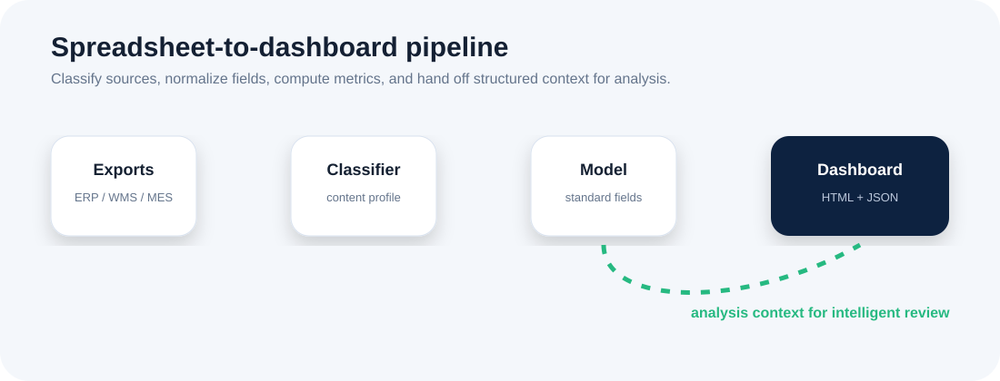

从文件到来源
Files to sources
内容画像基于表头、样本值、字段组合和弱文件名线索，不依赖脆弱的文件名约定。
Source profiling uses headers, sample values, field combinations, and weak filename hints.
把 Excel、CSV 导出和共享目录里的运营数据，转换为可验证的来源识别、统一字段模型、指标摘要、本地看板和报表上下文。公开版本保持通用，不绑定某个工厂、品类或内部模板。
Turn Excel, CSV exports, and shared-folder operations data into verified source classification, a unified field model, metric summaries, local dashboards, and reporting-ready context. The public edition stays generic instead of binding itself to one factory, product category, or private template.
产品定位
Positioning
顶尖数据工具的页面会先回答三个问题：它解决什么运营场景、用户为什么能信任结果、后续怎么扩展。这个公开展示页把这些答案放到页面主路径里。
Strong data-product pages answer three questions early: what operating problem it solves, why the result can be trusted, and how it extends. This showcase now puts those answers directly in the reading path.
内容画像基于表头、样本值、字段组合和弱文件名线索，不依赖脆弱的文件名约定。
Source profiling uses headers, sample values, field combinations, and weak filename hints.
字段映射屏蔽大小写、空格、分隔符、单位等噪声，让不同导出能进入同一个契约。
Field mapping absorbs case, spacing, separator, and unit noise into one contract.
指标口径由 JSON profile 管理，便于跨库存、需求、履约、补给和产出场景复用。
Metric definitions live in JSON profiles for reuse across inventory, demand, fulfillment, replenishment, and output.
结构化摘要可进入报表、检查清单或工作流交接，继续沉淀风险说明和复查建议。
Structured summaries can feed reports, checklists, or workflow handoff packages for risk notes and next checks.
产品系统
Product system
页面主视觉不再是抽象插图，而是展示真实产品结构：来源 profile、指标看板、质量门禁和报表上下文。
The primary visual is no longer abstract. It shows the actual product structure: source profiles, metric dashboard, quality gates, and review context.

来源签名、字段别名和指标口径都在配置中表达，避免把私有模板固化到代码。
Source signatures, field aliases, and metric definitions live in config, not private templates embedded in code.
分类、映射、规范化和计算分别保留边界，错误更容易定位。
Classification, mapping, normalization, and calculation remain separated for easier diagnosis.
HTML 看板和 summary.json 同源，视觉展示和机器摘要不会分叉。
The HTML dashboard and summary.json share the same source, keeping visual review and machine context aligned.
analysis context 是有边界的交接格式，适合报告、检查建议和自动化任务。
Analysis context is a bounded handoff format for reports, next checks, and automation.
质量与可信度
Quality and trust
优秀数据产品不会只展示漂亮图表，还会说明数据边界、发布检查和可维护性。这里展示公开版本真实具备的质量面。
Strong data products do not only show attractive charts; they expose boundaries, release checks, and maintainability. This section shows the real public quality surface.
这些命令既是本地验证路径，也是 CI 里的核心行为。展示页展示的是能被重复验证的工程状态。
These commands are both the local verification path and the core CI behavior. The page shows an engineering state that can be repeated.
python -m pytest -q
python -m factory_excel_ops.cli validate-config
python -m factory_excel_ops.cli run --input sample_data --output output
python -m factory_excel_ops.cli analysis-context --summary output/summary.json --output output/analysis_context.json
python scripts/package_project.py --name release-check --output output通用化边界
Generalization boundary
页面强调的是可移植结构：profile、pipeline、dashboard、reporting handoff。真实业务导出、内部字段规则和部署细节保持在公开边界之外。
The page emphasizes portable structure: profile, pipeline, dashboard, and reporting handoff. Real business exports, internal field rules, and deployment details stay outside the public boundary.
真实 ERP/WMS/MES 导出、客户或供应商记录、员工或订单数据、BOM、发运、财务、人事数据、私有工作簿模板、桌面二进制包、内部部署路径或操作日志。
No real ERP/WMS/MES exports, customer or supplier records, employee or order data, BOMs, shipment, finance, HR data, private workbook templates, desktop binaries, internal deployment paths, or operator logs.
可复用的分类、映射、指标、看板、分析上下文、测试、配置样例、文档和发布安全门禁。
Reusable classification, mapping, metrics, dashboards, analysis context, tests, sample configs, docs, and release safety gates.
开发者交接面
Developer handoff
顶尖开源项目会让评估者很快知道如何运行、如何集成、如何扩展。这里把本地看板、JSON 摘要和 integration spec 都放在同一个产品叙事里。
Strong open-source projects make it clear how to run, integrate, and extend. This page puts the local dashboard, JSON summary, and integration spec into one product story.

从同一份 summary 生成看板和报表上下文，避免人工复制造成的解释偏差。
Generate dashboard and reporting context from the same summary to avoid manual-copy drift.
python -m factory_excel_ops.cli integration-spec --output output/integration_interface.json
python -m factory_excel_ops.cli analysis-context --summary output/summary.json --output output/analysis_context.json产品路线图
Product roadmap
路线图展示的是公开核心的演进方向，而不是私有业务功能清单。
The roadmap shows public-core evolution, not a list of private business features.
页面展示的是一个可运行、可验证、可扩展的本地优先运营数据产品核心；它避免暴露私有项目细节，也避免把产品价值藏在零散说明文档里。
The page presents a runnable, verifiable, extensible local-first operations data product core. It avoids exposing private project detail and avoids hiding product value across scattered docs.